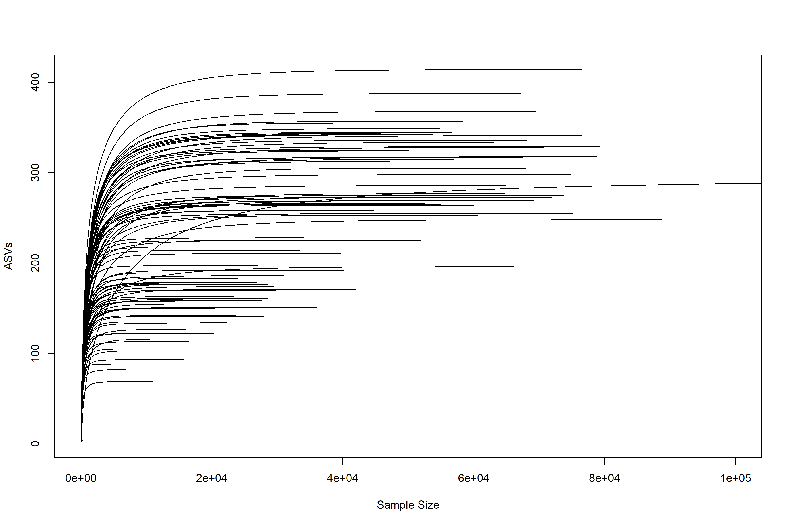

Chapter 7 Supp figure 1
Rarefaction curves based on ASVs observed. This only contains samples and ASVs that were retained after all filtering.

7.2 Rarefactipon plot
Create rarefaction plot
#Load phyloseq
load("./data/physeq")
load("./data/physeq_relabund")
#Get ASVs and samples kept in the processed relabund table
samples <- colnames(otu_table(physeq_relabund))
ASVs_to_keep <- row.names(otu_table(physeq_relabund))
ASVs <- row.names(tax_table(physeq))
ASVs_to_remove <- setdiff(ASVs, ASVs_to_keep)
subset_physeq <- microbiome::remove_taxa(x = physeq, ASVs_to_remove)
subset_physeq_2 <- phyloseq::prune_samples(samples, subset_physeq)
nrow(sample_data(subset_physeq_2))
save(subset_physeq_2, file = "./data/physeq_for_rarefaction")
load(file="./data/physeq_for_rarefaction")
asv_abund_df <- as.data.frame(t(phyloseq::otu_table(subset_physeq_2)))
png(filename = "./figures/rarefaction_plot.png", res = 300,
units = "mm", height = 200, width = 300)
rarecurve(x = asv_abund_df, step=100, lwd=1, ylab="ASVs", label=F, xlim=c(0, 100000))
dev.off()